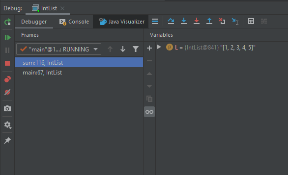
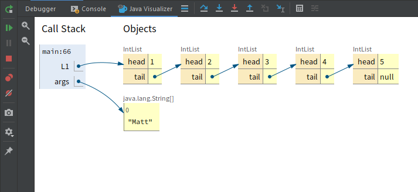
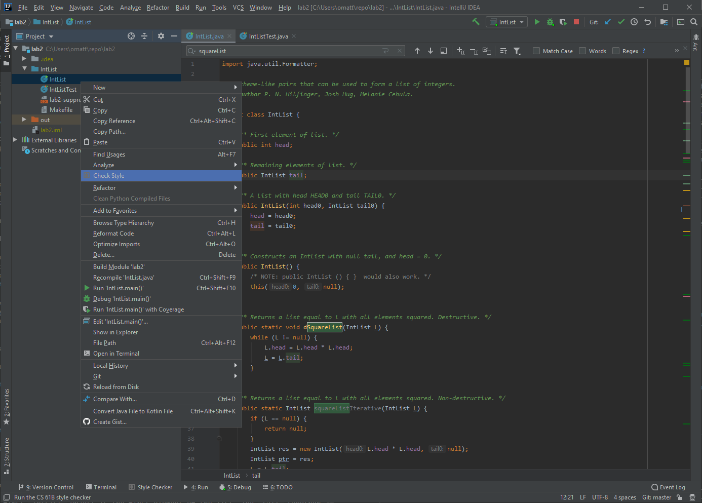

IntelliJ
使用IntelliJ
IntelliJ文档
正如我们提到的，IntelliJ 是一款在业界广泛使用的 IDE，它对您来说既有优点也有缺点。这意味着您将学习如何使用一个真正的工具，一个您毕业后可能会继续使用多年的工具。IntelliJ 还非常强大，可以让您以不同于以往课程中见过的方式编写代码。由于它被广泛使用，他们有专门的资源来维护文档。您可以在 这里找到完整指南 ，他们还在 这里提供了许多有用的视频教程 。
通过查看这些链接，您可以注意到使用IntelliJ的一个缺点是功能和可配置设置太多，可能会让人不知所措。他们的文档和视频经常可能会提到您从未听说过的东西，但这并不意味着您无法在本课程中有效地使用IntelliJ。我们将尽最大努力使这个过程尽可能轻松，希望能够帮助您提高编程效率。
在指南和教程视频中，我们找到了以下页面/视频来帮助您快速开始学习如何在 IntelliJ 中开发。除了实验的其余部分外，这个列表可能太长了，无法全部看完。我们将它放在这里作为参考，您可以在自己的时间完成，并将内容分为"现在阅读"和"稍后观看"。如果您有时间，请继续探索列出的资源，并尝试试验适合您的不同工作流程。
基础功能
- 用户界面概述 ：这是一个非常高级的概述，解释了IntelliJ使用的各种不同窗口和名称。理解这一点将帮助您理解他们的其他参考资料。
- 发现IntelliJ IDEA ：本指南较长，解释了IDE的一些最重要的功能以及可用的有用键盘快捷键。现在可以随意浏览，如果有不熟悉的部分使用了词汇也没关系。本指南的某些部分引用了我们不会使用的功能。如果其余文档感觉太大，这是一个一站式商店，包含了我们本学期将使用的大部分功能的解释。
高级功能
- 此视频展示了如何以最少的鼠标/触控板操作高效地导航IDE。视频中展示的许多功能对于编辑器的使用来说并不是必需的，但可以让您更快地完成工作。如果您有时间，请尝试观看此视频，如果可能的话请跟着操作。即使只知道此功能存在对未来也很有用。
- 此视频展示了IntelliJ中代码生成的功能。同样，这里展示的功能比您成功完成本课程所需的功能更高级，但在观看时尝试获取您可以整合到IDE使用中的新知识。
- 最后，本视频讨论了 IntelliJ IDE 与 Git（或其他版本控制）的一些集成。在整个课程中，我们期望您理解 Git CLI（命令行界面），但有时使用某种 GUI（图形用户界面）来可视化 Git 仓库的更改可能会很有用。同样，我们不期望学生将其作为与 Git 交互的主要方法，但知道它的存在是有帮助的。
使用CS 61B插件
Java 可视化工具
此插件包含内置版本的Java可视化工具，类似于您可能在CS 61A或其他先修课程中使用过的Python Tutor。此工具旨在帮助您调试和理解代码，并集成到IntelliJ的Java调试器中。学生们通常觉得这有助于过渡到在IntelliJ中进行调试，不幸的是，在学期中的某个时刻，我们运行的代码会变得对可视化工具来说太复杂了。
要使用内置可视化工具，您必须正在调试代码，因此您可以按照上述步骤再次启动调试器。当您的代码在断点处停止时，您可以点击Java可视化工具图标：

点击此按钮后，Java 可视化工具将会出现，显示当前暂停程序的栈以及不同变量的图表。

当您继续单步执行和暂停代码时，可视化工具的显示会相应更新，以向您展示程序中正在发生的事情。在实验的编码部分，请尝试使用可视化工具来检查您的理解。
风格检查
在本课程中，您最终需要确保您的代码符合 官方风格指南 。CS61B 插件包含一个有用的风格检查器，它会检查您的代码并告知您任何风格错误及其位置。这将使您能够在本地修复风格问题，这样您以后就不会失分。 注意：本次作业不会运行风格检查器，因此您无需担心提供的文件中的风格错误。
要运行风格检查器，只需右键单击您要检查的任何文件或目录，然后在出现的菜单中选择 Check Style

点击后，风格检查器将运行。一个工具窗口将出现，显示风格检查的结果以及任何错误的列表。点击链接可直接跳转到有问题的代码行：